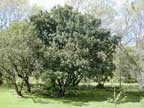

Titoki
Alectryon excelsus
Other names
New Zealand Oak
Description
A tree that grows up to 10 metres tall, with unequally pinnate shiny leaves up to 40 cm long with 4 6 pairs of leaflets (5 10 cm long) tapering to a point. Flowers are in very branched dull reddish panicles up to 30cm long. Fruit is a capsule 8 12mm long with large black shining seeds half embedded in a scarlet fleshy cup shaped aril.
Similar plants
None common. Chile hazel, sometimes grown for its nuts, has similar leaves.
Distribution
Common in forest from North Cape to Banks Peninsula and Westland. Native to New Zealand.
Toxin
Cyanolipids in the plant release hydrocyanic acid, though this is not proven. Leaves, flowers and fruit.
Species affected
There has only been one suspected case of poisoning in New Zealand when cows in the Hastings district died suddenly and titoki was thought to be the cause.
Clinical signs acute
Sudden death
Clinical signs chronic
Post mortem signs
Diagnosis
History of titoki ingestion.
Differential diagnosis
Treatment
No specific treatment is known. If cyanide poisoning is responsible for animal poisoning then treatment will be difficult as animals will die acutely. The treatment is the same as for cyanide poisoning. It is suggested that sodium nitrate can be given at 10 20 mg/kg iv, and sodium thiosulphate can also be given at a dose rate of 500 mg/kg iv.
Prognosis
Prevention
References
Conner H.E. The Poisonous Plants In New Zealand. 1992. GP Publications Ltd, Wellington
Parton K, Bruere A.N. and Chambers J.P. Veterinary Clinical Toxicology, 2nd ed. 2001. Veterinary Continuing Education Publication No. 208
 tree |
||
|
|
||
|
|
|
|